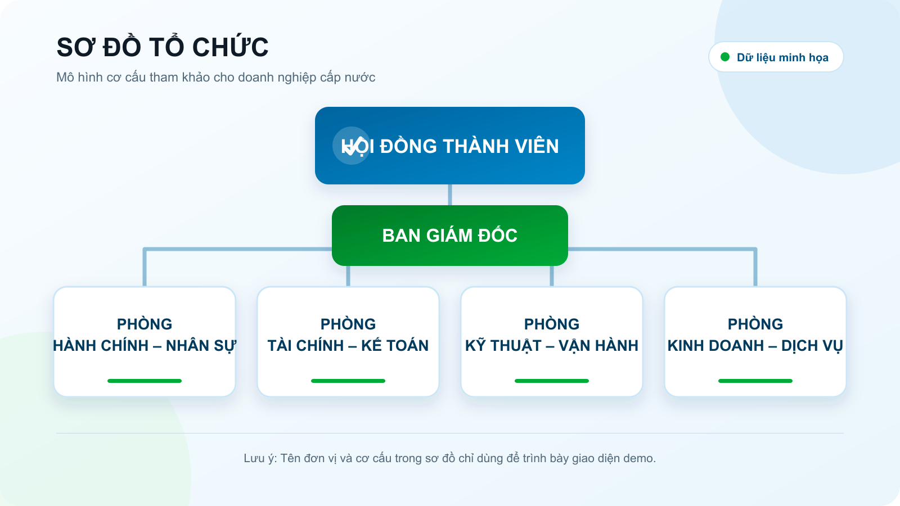

Hình thành và phát triển
- [năm]
Thành lập công ty
[cần nội dung: quyết định thành lập, cơ quan ra quyết định, nhiệm vụ ban đầu]
- [năm]
Đưa trạm cấp nước đầu tiên vào vận hành
[cần nội dung: địa bàn, công suất, số hộ được cấp nước]
- [năm]
Mở rộng mạng cấp nước
[cần nội dung: số km đường ống, số xã được phủ]
- 2026
Hiện nay
[cần nội dung: quy mô hiện tại, định hướng những năm tới]
Ngành nghề kinh doanh
Các hoạt động chính theo giấy chứng nhận đăng ký doanh nghiệp.
- Khai thác, xử lý và cung cấp nước sạch cho khu vực nông thôn.
- Xây dựng, quản lý và vận hành công trình cấp nước tập trung.
- Lắp đặt, sửa chữa, nâng dời đồng hồ nước và đường ống dịch vụ.
- Kiểm nghiệm chất lượng nước theo quy chuẩn hiện hành.
- [cần bổ sung các ngành nghề khác nếu có]
Sứ mệnh – Giá trị
[Nội dung minh họa cho nội dung sau này của web]
Nước đạt quy chuẩn
Kiểm nghiệm định kỳ, công bố kết quả công khai trên website.
Cấp nước ổn định
Mọi lịch tạm ngừng đều thông báo trước; sự cố tiếp nhận 24/7.
Gần dân, dễ liên hệ
Một số điện thoại duy nhất cho mọi phản ánh về nước.
Bảo vệ nguồn nước
Giảm thất thoát, bảo vệ vùng khai thác nước ngầm và nước mặt.
Sơ đồ tổ chức

Khu vực & trạm cấp nước
Các trạm cấp nước và địa bàn phục vụ của công ty.
| Trạm cấp nước | Phường phục vụ | Công suất (m³/ngày) | Số hộ |
|---|---|---|---|
| Trạm cấp nước Mỹ Hà | Phường Mỹ Hà | 4.200 | 3.850 |
| Trạm cấp nước Giao Thiện | Phường Giao Thiện | 3.600 | 3.120 |
| Trạm cấp nước Xuân Trường | Phường Xuân Trường | 5.800 | 5.040 |
| Trạm cấp nước Hải Hậu | Phường Hải Hậu | 6.500 | 5.900 |
| Trạm cấp nước Nghĩa Hưng | Phường Nghĩa Hưng | 4.900 | 4.300 |